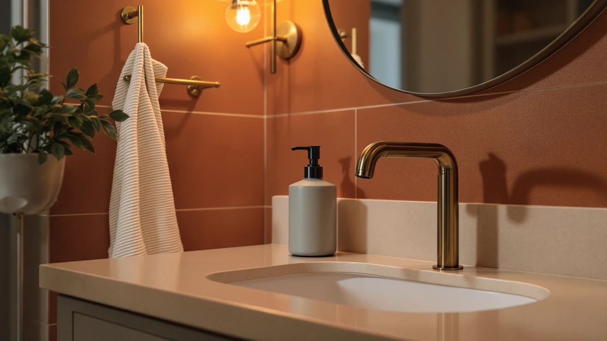

Best Soap Dispensers for Toddlers (2026)
Prices and picks verified as of October 2026. Independent, reader-supported reviews.


Quick Answer
The best soap dispensers for toddlers combine a low-resistance pump or touchless sensor with a design playful enough to make handwashing feel like fun. After comparing manual, foaming, and automatic options, the Hyever Cute Cartoon Dinosaur Hand Soap dispenser stands out for pairing an easy pump with a design toddlers want to use.
Our pick: Cute Cartoon Dinosaur Hand Soap — $11.99 Check Price on Amazon
Bottom line: our top pick is the Cute Cartoon Dinosaur Hand Soap Pump Lotion at $11.99. The best budget option is the PURITY BABE Pink Duck Cute Soap Dispenser for Kids Gift at $9.99.
Things to Know Before You Buy
- Pump resistance matters more than bottle design. A pump that needs real force to push down will frustrate toddlers before the soap even comes out, so look for dispensers reviewers describe as easy to press with one finger.
- Touchless and automatic dispensers cut down on mess but need batteries. Most run on AA batteries and use an infrared sensor, so factor in occasional battery swaps when you're budgeting for one.
- Foaming dispensers use less liquid soap per pump than standard lotion-style pumps, which can mean fewer refills and less soap wasted on hands that get washed for five seconds max.
- Character and novelty designs, like dinosaur or duck shapes, change how often toddlers wash on their own. Several buyers in our research cite the design itself as the reason their kid stopped avoiding the sink.
- Material matters near a wet sink. ABS plastic, used in every dispenser in this guide, resists cracking and is easy to wipe down, which counts for more than looks once a toddler is involved.
Finding the best soap dispensers for toddlers means balancing two things that don't always go together: a design low enough and simple enough for small hands, and a mechanism that doesn't flood the bathroom counter in suds. Getting your toddler to wash their hands without a fight often comes down to the dispenser itself, not the soap. A pump that's too stiff, a bottle that's too tall, or a design that's boring to look at can turn handwashing into a daily battle. We compared automatic sensors, foaming pumps, and character-themed manual bottles to figure out which ones hold up to toddler hands and parent expectations.
We researched seven dispensers built specifically with kids in mind, looking at pump mechanism, bottle capacity, material durability, and how verified buyers describe day-to-day use with toddlers in the house. Our top pick is the Hyever Cute Cartoon Dinosaur Hand Soap dispenser, which pairs a low-effort pump with a dinosaur design that gives toddlers a reason to stop at the sink. At $11.99, it's also one of the more affordable options we looked at, which matters for a bottle that is going to get knocked off the counter more than once.
Not every family wants a manual pump, though. If your toddler struggles with squeezing or you'd rather cut down on mess entirely, the touchless automatic dispensers in this guide sense a hand underneath and release a pre-measured amount of soap without any pressing at all. We cover both approaches below, along with foaming and character-licensed options, so you can match the dispenser to how your own toddler behaves at the sink.
Why You Should Trust Us
This guide is written by Ilane Tall, who covers home and bath products for Best Soap Dispensers and has spent years comparing kid-focused bathroom gear for parents trying to build better routines at the sink. We don't own a testing lab and we don't claim to have physically compared every dispenser on this list. Instead, we research specs, pricing, and verified buyer reviews, and we cross-reference what reviewers report about pump durability, leak issues, and how toddlers respond to each design. When we recommend one of the best soap dispensers for toddlers, it's because the evidence from real owners backs it up, not because a brand sent us a sample.
How We Picked
We started by looking specifically for dispensers marketed toward or clearly suited to toddlers, which ruled out sleek adult-style bottles with narrow openings or pumps that require too much hand strength for a two or three year old. From there, we compared pump mechanism (manual, foaming, or automatic), bottle capacity, price, and material. We prioritized dispensers with a strong track record of verified reviews over newer listings with thin review counts, and we looked for any recurring complaints about leaking, sensor reliability, or pumps breaking within the first few months. Dispensers with a pattern of unresolved mechanical complaints did not make the cut, even when the design was appealing.
How We Compared
We compared the seven dispensers in this guide using the specs and pricing listed by the sellers, along with patterns in verified owner reviews. For each one, we looked at reported pump consistency, how long the mechanism held up under daily use, and whether the stated capacity matched how often owners said they refilled it. For the automatic models, we paid close attention to how reviewers described sensor response time and battery life, since those are the two complaints that come up most often with touchless dispensers. We did not run these products through a lab, and we don't claim hands-on use. Our comparison is built from publicly available specs, pricing history, and what verified buyers report after living with each product.
Our Picks

Cute Cartoon Dinosaur Hand Soap
What we like
- Dinosaur shape gives toddlers a visual reason to stop at the sink instead of rushing past it
- Pump requires little downward pressure, which matters for smaller hands still building grip strength
- Priced low enough that a cracked bottle or a toddler-related spill isn't a major loss
Flaws but not dealbreakers
- Manual pump means soap volume per press varies more than with foaming or automatic designs
- Reviewers note the paint finish can wear faster than the plastic body itself with heavy daily use
| Material | ABS plastic |
| Size | — |
The Hyever dinosaur dispenser is a manual pump bottle, which keeps the mechanism simple: no batteries, no sensor, nothing that can go out of sync. That simplicity is part of why it works for toddlers specifically. There's no learning curve beyond pressing down, and reviewers consistently note that the pump needs noticeably less force than a standard adult-style dispenser, which matters when you're dealing with a child who gives up after one failed attempt. At $11.99, it sits at the lower end of the dispensers we compared, which makes it an easy first dispenser to try if you're not sure your toddler will take to the idea of a dedicated soap bottle at all.
The dinosaur design is doing real work here beyond decoration. Multiple verified buyers mention that their toddler started washing hands without being asked once this bottle replaced a plain pump dispenser, which lines up with what you'd expect from a kid-focused product that looks like it belongs to a kid. The tradeoff is that it's a basic manual pump, so if you're trying to cut down on soap waste or mess around the sink, this isn't the most efficient option on this list. For a first dispenser built around getting a toddler to engage with handwashing at all, though, it's the pick we'd start with.

DONASIRA Automatic Soap Dispenser Touchless
What we like
- Infrared sensor removes the need for a toddler to squeeze or press anything correctly
- Pre-measured dispensing means less soap wasted compared with a manual pump a toddler presses too hard
- Touchless operation keeps the bottle itself cleaner since hands never contact it
Flaws but not dealbreakers
- Runs on batteries, so it needs occasional battery swaps that a manual pump never requires
- Some reviewers report the sensor needs a hand held at a specific distance, which can take a toddler a few tries to learn
| Material | ABS plastic |
| Size | Liquid |
The DONASIRA dispenser swaps the pump for an infrared sensor, so a toddler only has to hold a hand underneath the spout rather than coordinate a press-and-release motion. For kids who struggle with the fine motor control a manual pump requires, that difference matters more than any design or color choice. At $20.99, it costs more than a basic manual bottle, but you're paying for a mechanism that removes one more opportunity for things to go wrong at a wet, slippery sink.
Two things come up most often in reviews of touchless dispensers like this one: sensor consistency and battery life. DONASIRA holds up reasonably well on both, based on what verified buyers report. The dispensing amount stays fairly consistent press after press, which cuts down on the over-pumping that leads to suds everywhere. The flip side is that it's one more electronic device in the bathroom, and if the batteries die, you're back to no soap at all until someone notices and swaps them out.

CADUFUELLY Automatic Soap Dispenser Cute
What we like
- Compact footprint fits on smaller bathroom counters or shared kids' bathrooms better than bulkier automatic models
- Touchless sensor means toddlers don't need to learn a pump motion at all
- Rounded, toy-like shape reads as a kid's product rather than an adult appliance dropped into a child's space
Flaws but not dealbreakers
- At $22.99, it's one of the pricier options we compared for what is still a basic dispensing function
- Reviewers note the reservoir is on the smaller side, so refills come more often than with larger manual bottles
| Material | ABS plastic |
| Size | — |
CADUFUELLY takes the same touchless approach as other automatic dispensers on this list but in a smaller, rounder shape that fits better on a crowded counter shared with a sibling's bath toys or a step stool. The infrared sensor handles the actual dispensing, so the design work here is mostly about making an automatic dispenser look less like an office supply and more like something a toddler would want near their own sink.
The smaller reservoir is the real tradeoff. Verified buyers mention refilling it more frequently than larger bottles, which is a reasonable cost for a product aimed at compact bathrooms rather than high-traffic family ones. If your main bathroom gets heavy daily use from multiple kids, a larger-capacity option on this list will mean fewer refills. For a single toddler's bathroom or a guest bath used occasionally, the smaller size won't matter much.

PURITY BABE Pink Duck Cute
What we like
- Lowest price of any dispenser we compared, at $9.99
- Duck shape and pink color scheme give toddlers a reason to associate the sink with something fun rather than a chore
- 10-ounce capacity is enough for weeks of use between refills in a single-child bathroom
Flaws but not dealbreakers
- Manual pump only, so there's no touchless option here if that's a priority
- Reviewers note the pump mechanism feels less durable over time than the pricier automatic options on this list
| Material | ABS plastic |
| Size | 1X10oz |
PURITY BABE's duck-shaped bottle is the cheapest dispenser in this guide at $9.99, and it holds 10 ounces of soap, which is a reasonable capacity for a single toddler's bathroom. There's nothing complicated about it: it's a manual pump in a duck shape, aimed squarely at making the bottle itself appealing enough that a toddler wants to use it unprompted.
The tradeoff for that low price shows up in the pump's long-term durability. Verified reviews mention the mechanism feeling looser after a few months of regular use compared with some of the sturdier options on this list, though for the price, most buyers treat that as an acceptable compromise rather than a dealbreaker. If you're testing whether a character-themed dispenser will get your toddler to wash hands before committing to a pricier automatic model, this is the low-risk way to find out.

YAUKPH Matte Light Pink Foaming
What we like
- Foaming mechanism uses less liquid soap per pump than standard lotion-style dispensers, stretching each refill further
- Large capacity means fewer refills than the smaller bottles on this list
- At $7.99, it's one of the least expensive options we compared
Flaws but not dealbreakers
- Foaming dispensers typically need a specific soap-to-water dilution to work properly, which adds a small amount of setup most manual pumps don't require
- Matte finish shows water spots more visibly than a glossy bottle, according to some reviewers
| Material | ABS plastic |
| Size | Large |
YAUKPH's foaming dispenser works differently from the manual pumps elsewhere on this list. Instead of pushing out liquid soap directly, it aerates a diluted soap mixture into foam, which means each pump uses less actual soap. For toddlers who tend to overdo it with a regular pump, foam also rinses off faster and leaves less residue around the sink.
The large capacity and low $7.99 price make this one of the more cost-effective options here, especially for households that go through soap quickly with more than one kid using the same bathroom. The one real adjustment is that foaming dispensers need the soap mixed with water at roughly the ratio the bottle calls for, which is a small extra step compared with filling a manual pump bottle straight from a soap refill jug. Once it's dialed in, reviewers describe it as low-maintenance from there.

Ipalmay Cute Automatic Foam Soap
What we like
- Combines touchless sensing with foaming soap, so there's no pump motion to learn and less soap used per dispense
- Foam rinses off quickly, which can shorten the already-short attention span toddlers bring to handwashing
- Sensor-based dispensing keeps the amount consistent regardless of how a toddler's hand is positioned
Flaws but not dealbreakers
- At $28.92, it's the most expensive dispenser we compared in this guide
- Combines two systems, sensor and foam pump, which means more that can need troubleshooting than a simple manual bottle
| Material | ABS plastic |
| Size | — |
Ipalmay's dispenser pairs the touchless sensor you'd find on a standard automatic dispenser with a foaming mechanism, so you get both conveniences in one bottle. For a toddler, that means no pump to press and less soap per use than a liquid pump would release, with foam that tends to rinse away faster under a quick toddler-length hand wash.
The $28.92 price is the highest of any dispenser in this guide, and that's the main thing to weigh before buying it. You're paying for two mechanisms working together rather than one, which is reasonable if both features matter to you, but it's a harder sell if you only care about one or the other. Verified reviews of touchless foaming dispensers say the convenience holds up well day to day, though it's worth deciding whether that combination is worth roughly three times the price of the cheapest manual options on this list.

Jay Franco Bluey Soap Dispenser
What we like
- Licensed Bluey design taps into character recognition toddlers already have, which can make handwashing feel less like a rule and more like a choice
- Standard manual pump design that's simple to refill and doesn't rely on batteries
- Sized to stand out on a counter at 5.5 by 4.7 by 8 inches, making it easy for a toddler to spot and reach
Flaws but not dealbreakers
- Licensed character designs typically cost more than generic shapes with similar function, and this one is no exception
- If your toddler isn't familiar with the show, the main selling point of this bottle doesn't apply
| Material | ABS plastic |
| Size | 5.5 x 4.7 x 8 inches |
Jay Franco's Bluey dispenser leans entirely on character recognition. The mechanism underneath is a standard manual pump, the same basic approach as several other bottles on this list, but the Bluey branding is the actual reason to pick this one over a cheaper unbranded option. At $17.99, you're paying a premium for the license, not for a more advanced pump.
For a household where Bluey is already a known quantity, that premium tends to pay off in a way generic designs don't. Verified reviews of character-themed bathroom products say recognition matters more than any functional upgrade when it comes to getting a reluctant toddler to the sink. If your toddler has no particular attachment to the show, though, the dinosaur or duck options on this list do the same basic job for less money.
Quick Comparison
| Product | Material | Price | Rating | Best for | Get it |
|---|---|---|---|---|---|
| Cute Cartoon Dinosaur Hand Soap | ABS plastic | $11.99 | 4 | Toddlers who need motivation to wash | View on Amazon → |
| DONASIRA Automatic Soap Dispenser Touchless | ABS plastic | $20.99 | 4 | Toddlers who struggle with pump motion | View on Amazon → |
| CADUFUELLY Automatic Soap Dispenser Cute | ABS plastic | $22.99 | 4 | Compact bathrooms with limited counter space | View on Amazon → |
| PURITY BABE Pink Duck Cute | ABS plastic | $9.99 | 4 | Budget-conscious first-time buyers | View on Amazon → |
| YAUKPH Matte Light Pink Foaming | ABS plastic | $7.99 | 4 | Stretching soap refills further | View on Amazon → |
| Ipalmay Cute Automatic Foam Soap | ABS plastic | $28.92 | 4 | Combining touchless and foaming in one dispenser | View on Amazon → |
| Jay Franco Bluey Soap Dispenser | ABS plastic | $17.99 | 4 | Bluey fans who need extra motivation | View on Amazon → |
The Competition
We also looked at glass soap dispensers marketed for bathroom decor, but ruled them out immediately given the toddler-proofing requirement central to this guide. A dropped glass bottle near a wet floor isn't a risk worth taking for a few dollars saved. We considered several wall-mounted dispensers that eliminate counter clutter entirely, but most require drilling or adhesive mounting at a fixed height, which doesn't adjust as a toddler grows and makes refilling less convenient than a countertop bottle. We also passed on dispensers with loose, unsealed caps after noticing a pattern in reviews of leaking during shipping and tipping over on counters, since a leaking bottle around a toddler's bathroom creates more mess than the dispenser is meant to solve. Plain, unbranded pump bottles without any kid-specific design came up often in our research too, but we left them out of the main list because the character or color element is what gets toddlers to use these dispensers unprompted, something a generic bottle doesn't offer. Across every alternative we considered, the Hyever dinosaur dispenser remains our pick among the best soap dispensers for toddlers for the combination of price and a design that gets kids to use it.
Frequently Asked Questions
What is the best soap dispenser for a toddler who refuses to wash their hands?
Design matters most for reluctant toddlers. A character or novelty-shaped bottle, like a dinosaur or duck design, gives a toddler a reason to engage with the sink that a plain bottle doesn't. Pairing that with a pump that needs minimal pressure removes the second common reason toddlers avoid handwashing: a mechanism that's hard to operate.
Are automatic soap dispensers safe for toddlers to use?
Yes. Touchless dispensers use an infrared sensor to release soap once a hand is detected underneath, so there's no pump to squeeze and no risk of a toddler pressing too hard and spraying soap everywhere. The main maintenance point is keeping batteries charged, since the sensor won't dispense soap at all once they run out.
How much soap should a toddler use per handwash?
A single pump from a standard dispenser, or one press from an automatic or foaming model, is enough. Reviewers researching this category consistently note that foaming dispensers in particular use less soap per wash than liquid pumps, which cuts down on waste from toddlers who tend to over-pump without realizing it.